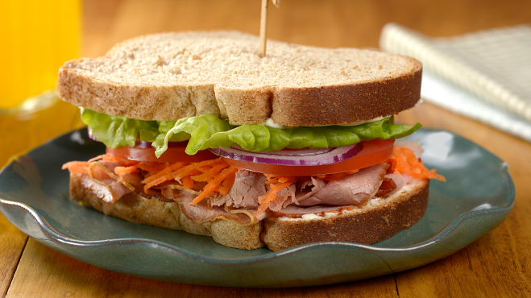

Sanduíche de Presunto (do Chaves)
Ingredientes:
- 2 fatias de pão de forma
- 1 fatia de presunto
- Margarina ou similar (opcional)
Modo de preparo:
- Primeiro, separe duas fatias de pão de forma e as disponha sobre uma superfície limpa
- Com uma faca apropriada, passe a margarina sobre uma das fatias do pão
- Por fim, coloque a fatia de presunto
Pronto! Seu simples e delicioso sanduíche já está preparado para ser saboreado. "Isso, isso, isso!"
"Não há nada de errado em celebrar uma vida simples." - J.R.R. Tolkien
